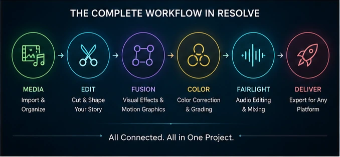
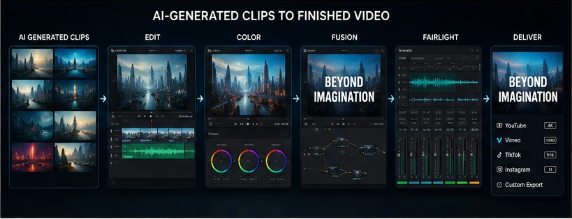

Video production has a habit of spreading itself across far too many applications. Understanding why DaVinci Resolve is useful starts with one major advantage: nearly every stage of post-production can happen inside the same project.
One program edits the footage. Another handles color. A third creates motion graphics. Audio gets sent somewhere else, and the final video returns with filenames such as final_v7_REALfinal_use-this-one.
DaVinci Resolve takes a different approach.
It combines media management, video editing, visual effects, motion graphics, color correction, audio post-production and final delivery inside one application.
That does not mean every creator needs to master every page immediately. It means the software can grow with the kind of work being created.
Someone can begin by cutting together a simple YouTube video and eventually use the same application for a short film, music video, commercial, animation, social campaign or AI-generated video project.
That range is what makes DaVinci Resolve so useful.
It can handle the entire post-production process
DaVinci Resolve is divided into specialized pages, with each page focused on a different stage of production.
The main pages include:
- Media for importing and organizing footage - Cut for fast editing - Edit for detailed timeline work - Fusion for visual effects and motion graphics - Color for correction and grading - Fairlight for audio editing and mixing - Deliver for rendering and exporting
Each page feels like a dedicated piece of software, but they all work on the same project and timeline.
A clip edited on the Edit page is immediately available in Fusion. Its effects can then be graded on the Color page, mixed with audio in Fairlight and exported from Deliver.
There is no need to render an intermediate file every time the project moves to another department.
That reduces duplicated files, broken links and the wonderful production tradition of trying to remember which version was actually approved.

The editing tools work for small and large projects
Resolve includes both the Cut page and the Edit page.
The Cut page is designed for speed. It is useful for short projects, quick turnarounds, interviews, social content and situations where getting through a large amount of footage matters more than building an elaborate timeline.
The Edit page provides a more traditional editing environment.
It includes multiple video and audio tracks, trimming tools, transitions, titles, keyframes, subtitles, multicamera editing, proxies and detailed control over how every clip fits into the timeline.
This means Resolve is not limited to one kind of editor.
A beginner can drag clips into a timeline and begin cutting without understanding every technical option.
A more experienced editor can organize bins, create proxies, work with multicamera footage and build complicated timelines without leaving the application.
Resolve also supports a wide range of professional video and audio formats, including common delivery files and higher-end camera and visual-effects formats.
That flexibility matters because creators rarely work with footage from only one source anymore.
A single project might contain phone video, screen recordings, camera footage, rendered 3D animation, stock clips and AI-generated shots.
Its color tools are useful even without a cinematic production
DaVinci Resolve originally became known for color correction and grading, and the Color page remains one of its strongest areas.
Color correction is the process of fixing the image.
That can include adjusting exposure, correcting white balance, matching different cameras and keeping skin tones believable.
Color grading is the more creative stage.
That is where the overall mood, contrast, saturation and visual style are developed.
These tools are not only useful for feature films.
A basic color pass can improve:
- YouTube videos - Product demonstrations - Interviews - Social-media clips - Music videos - Architectural animations - 3D renders - AI-generated footage - Phone recordings
Even footage produced entirely inside a computer may need grading.
Several AI clips generated from the same prompt can have different contrast, color temperature and saturation. Color tools can help those shots feel like they belong in the same sequence.
Resolve includes familiar primary controls for exposure, contrast, temperature and saturation, along with more advanced tools such as curves, qualifiers, masks, tracking and node-based grading.
The simple tools make it approachable.
The deeper tools mean creators do not immediately outgrow it.
Fusion adds visual effects without requiring another application
Fusion is built directly into DaVinci Resolve.
It uses a node-based workflow for compositing, motion graphics and visual effects.
That can sound intimidating if someone has only worked with timeline layers, but nodes provide a clear map of how an effect is constructed. Each node performs a specific task, and the connections show how the image moves through the effect.
Fusion can be used for practical jobs such as:
- Removing unwanted objects - Replacing screens and signs - Tracking graphics onto moving footage - Keying green-screen video - Creating animated titles - Adding particles - Building lower thirds - Compositing rendered 3D elements - Creating camera moves through 2D and 3D scenes - Repairing individual shots
The main advantage is not that every project needs complicated visual effects.
It is that the tools are available when one shot suddenly does.
A creator may spend most of a project editing normally and then discover that a logo needs replacing, a microphone entered the frame or a title needs more animation than the Edit page provides.
That problem can be solved inside the same project.
Fairlight makes audio part of the edit
Audio is often treated as something that gets fixed after the picture is finished.
That is usually a mistake.
Bad sound can make strong images feel amateur, while clean dialogue and thoughtful sound design can make modest footage feel much more polished.
Fairlight is Resolve’s dedicated audio page.
It includes tools for recording, editing, mixing, automation, equalization, compression, noise cleanup, dialogue replacement, sound effects and final audio delivery.
Every track can have its own processing, volume automation and routing.
This is useful for:
- Cleaning dialogue - Balancing music and speech - Adding sound effects - Recording voice-over - Mixing interviews - Building music-video soundtracks - Creating stereo or surround mixes - Repairing noisy recordings - Preparing alternate audio versions
The integration with picture is the important part.
Audio can be edited while watching the actual scene, and changes to the timeline remain connected to the Fairlight mix.
There is less need to export the sound, rebuild it in another program and then hope nothing changes in the edit.
It is especially valuable for AI-generated video
AI video tools are becoming better at generating individual shots.
Those shots still need to be turned into a finished video.
A generator may create the footage, but it does not automatically solve:
- Shot order - Pacing - Continuity - Music timing - Color consistency - Sound design - Dialogue balance - Titles - Transitions - Final delivery formats
DaVinci Resolve handles the part between generation and publication.
Generated clips from different tools can be assembled into a timeline, trimmed to the strongest moments and matched through color correction.
Fusion can repair or enhance individual shots. Fairlight can add ambience, effects, dialogue and music. The Deliver page can create separate versions for a website, YouTube, social media or presentation.
That makes Resolve a useful companion to AI video rather than an alternative to it.
AI provides raw material.
Resolve turns that material into a finished sequence.

The free version is genuinely capable
DaVinci Resolve has a free version for Mac, Windows and Linux.
This is not a short trial that locks the export button after a week.
The free version includes professional editing, Fusion visual effects, color correction, Fairlight audio and delivery tools.
For many independent creators, students, YouTubers and small production projects, the free version may provide everything needed to complete real work.
DaVinci Resolve Studio is the paid edition.
Studio adds more advanced features, including additional Resolve FX, Neural Engine tools, expanded format support, advanced noise reduction, higher frame rates and resolutions, and other professional capabilities.
The free version makes it possible to learn the full workflow before deciding whether the Studio features are necessary.
That is a much friendlier entry point than buying several subscriptions simply to discover which part of video production is actually enjoyable.
Resolve can grow with the creator
A useful creative tool should not only solve today’s problem.
It should leave room for tomorrow’s project.
Someone may begin by learning three basic actions:
1. Import clips. 2. Put them on a timeline. 3. Export a finished video.
Later, that same person can begin learning color correction, audio mixing, motion graphics, compositing and collaboration.
There is no requirement to learn the entire application at once.
In fact, attempting to master every page before completing a first edit is a reliable way to spend three weeks watching tutorials and produce absolutely nothing.
A better approach is to learn the feature needed for the current project.
The software will still contain the other buttons when the next problem arrives.
Collaboration is built into the same project
DaVinci Resolve supports local and remote collaboration through shared project libraries and Blackmagic Cloud.
Editors, colorists, visual-effects artists and audio engineers can work within the same project rather than passing separate project files back and forth.
The collaboration tools include timeline and bin locking, shared markers, project updates and built-in communication features.
A solo creator may not need any of that today.
It becomes useful when a project grows and another person needs to handle sound, color or editing.
Using one connected project reduces the need to conform timelines between completely separate applications.
For teams, that can be one of Resolve’s strongest advantages.
DaVinci Resolve 21 keeps expanding beyond traditional editing
DaVinci Resolve 21 continues expanding the application’s range.
The current version adds the Photo page, additional motion-graphics tools, improved keyframing, new search and organizational features, updated audio track management and expanded support for graphics and immersive formats.
It also includes tools aimed directly at modern content creation, such as vertical and square timeline resolutions, picture-in-picture effects and direct social-media delivery options.
The important point is not that every user needs every new feature.
It is that Resolve is being developed for several kinds of creative work instead of one narrow editing workflow.
The main disadvantage is the learning curve
Resolve is powerful because it contains a lot of tools.
It can also feel overwhelming for exactly the same reason.
A new user opens the application and sees multiple pages, unfamiliar icons, nodes, color scopes, audio routing and enough settings to make a microwave clock look emotionally supportive.
The good news is that the basic workflow is much simpler than the complete interface suggests.
For a first project, a creator only needs to learn:
- How to import footage - How to create a timeline - How to trim clips - How to adjust audio levels - How to export
Everything else can be added gradually.
The application becomes easier once the pages are understood as separate workspaces rather than one enormous control panel.
Who is DaVinci Resolve useful for?
Resolve is a strong option for:
- Beginning video editors - YouTube and social creators - Filmmakers - Music-video creators - 3D artists - Motion-graphics artists - Colorists - Audio editors - Documentary teams - AI video creators - Freelancers - Small studios
It is especially useful for anyone who wants to reduce the number of programs involved in finishing a video.
Not every creator will use Fusion.
Not every editor will perform a complicated color grade.
Not every project needs a professional Fairlight mix.
The value comes from having those capabilities available without rebuilding the entire workflow around another application.
The real benefit is having one place to finish the work
DaVinci Resolve is useful because it connects the separate parts of post-production.
Editing affects color.
Color affects visual effects.
Visual effects affect the edit.
Sound affects the timing.
The final delivery format can expose problems in all of them.
Keeping those stages inside one project makes it easier to move between creative decisions without constantly exporting, converting and reconnecting files.
Resolve is not the simplest video application available.
It may be one of the most complete tools a creator can learn without being forced into several separate subscriptions.
A beginner can use it to trim a few clips.
A professional team can use it to edit, grade, composite, mix and deliver a complex production.
That range is the reason it remains useful.
It does not merely help create a video.
It provides a place to finish one.
More video-production and creative workflow articles are available on the [JasonArts blog](https://www.jasonarts.com/blog).
Sources
Blackmagic Design — DaVinci Resolve: https://www.blackmagicdesign.com/products/davinciresolve
Blackmagic Design — Edit Page: https://www.blackmagicdesign.com/products/davinciresolve/edit
Blackmagic Design — Fusion Page: https://www.blackmagicdesign.com/products/davinciresolve/fusion
Blackmagic Design — Fairlight Page: https://www.blackmagicdesign.com/products/davinciresolve/fairlight
Blackmagic Design — What’s New in DaVinci Resolve 21: https://www.blackmagicdesign.com/products/davinciresolve/whatsnew